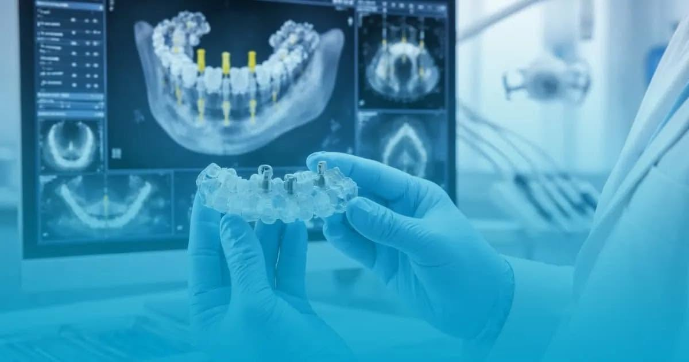

Terapie
Carii, obturații, tratament de canal. Dintele se păstrează cât se poate păstra — extracția e ultima opțiune, nu prima.

Drumul Taberei nr. 69 · sector 6
Ortodonție, chirurgie, parodontologie, protetică — fiecare la medicul cu specializarea lui. Nu trebuie să pleci în altă parte la jumătatea tratamentului.
Servicii
Șase domenii, acoperite în cabinet. Radiografia se face pe loc, nu te trimitem în alt colț al orașului pentru o imagine.
Carii, obturații, tratament de canal. Dintele se păstrează cât se poate păstra — extracția e ultima opțiune, nu prima.
Detartraj, periaj, sigilări, albire, gutiere. O jumătate de oră la fiecare șase luni, și majoritatea problemelor scumpe nu mai apar.
Extracții, inclusiv molari de minte incluși, rezecții, tratamentul gingiei. Medic cu specializare în chirurgie oro-maxilo-facială.
Aparat fix metalic sau ceramic, aparat mobil, aparat funcțional, disjunctor. Se alege după radiografie, nu după ce e la modă.

Coroane, fațete, punți, proteze. De la reconstituire pe fibră de sticlă până la lucrări metalo-ceramice.
Radiografie retroalveolară făcută în cabinet, în aceeași vizită. Planul de tratament se stabilește pe imagine, nu din ochi.
Echipa
Cinci medici și trei asistenți. Pe cazuri care ies din rutină nu improvizează nimeni — te preia colegul cu specializarea potrivită.
Tarife
Cabinetul își publică tarifarul pe categorii. Mai jos sunt câteva poziții des căutate; lista completă se cere la recepție.
Tarife preluate din tarifarul public al cabinetului. Se confirmă la consultație, înainte de începerea tratamentului.
Păreri
Recenzii publice de pe Google, cu numele și textul neschimbate.
Cea mai mișto echipă! Am fost inclusiv cu copiii și chiar îmi era teamă că se vor speria, însă abia așteptau să mai mergem! Le-a explicat dna dr tot timpul ce face, la ce folosesc toate instrumentele. Ne simțim ca în familie de fiecare dată.
Foarte mulțumit de personalul acestui cabinet, în special de doamna doctor Oana Gordiciuc, care dă dovadă de un adevărat profesionalism.
Recomand.
Program
Ora exactă de deschidere se confirmă la telefon — cabinetul lucrează pe programări.
Sună: 0723 40 18 28Contact